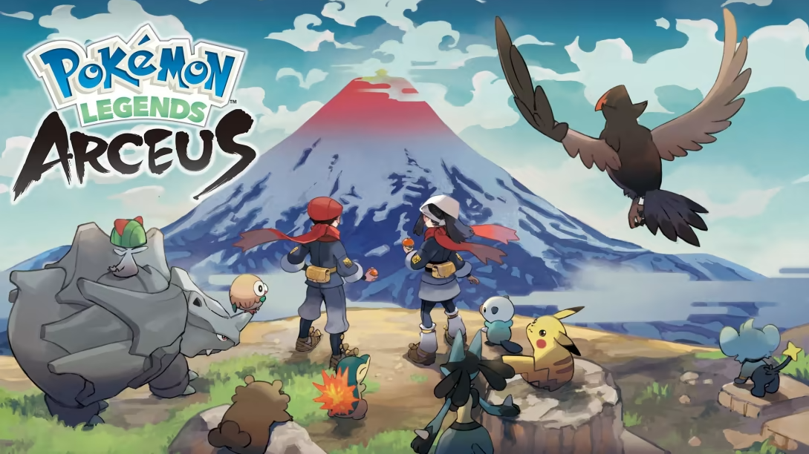
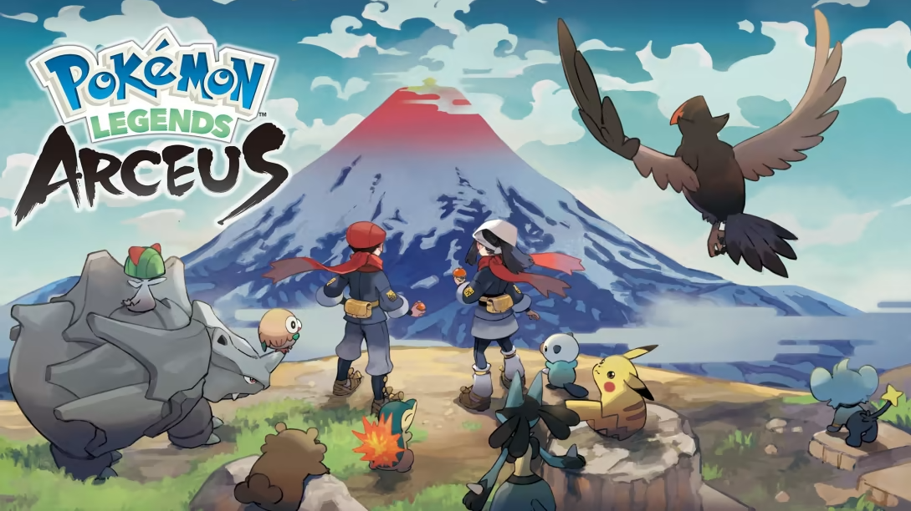
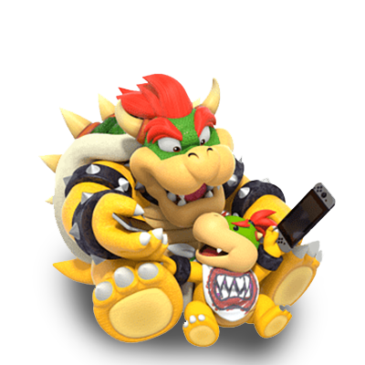

Conheça o novo Nintendo Switch!
O Nintendo Switch foi desenvolvido para fazer parte da sua vida, transformando-se de um console doméstico em um console portátil num piscar de olhos.
.png)
Modo Portátil

Este é o Joy-Con™
Os controles Joy-Con incluídos permitem total flexibilidade no jogo.
Escolha o seu estilo de controle
Um ou dois controles, na vertical ou na horizontal, encaixados no console ou não. Você pode jogar de diversas maneiras, dependendo do jogo.
Jogue com um amigo, passe um Joy-Con a um amigo para uma diversão instantânea com dois jogadores.
Experimente algo novo
A vibração HD traz a você uma experiência física mais realista do jogo, enquanto a câmera de infravermelho possibilita novas experiências como Nintendo Labo.
Funcionalidades do Switch
Multijogador Local
Jogue com os amigos na telona em casa ou conecte até oito consoles Nintendo Switch para jogar no modo multijogador em qualquer lugar.
Multijogador Online
Jogue em equipe ou confronte outros jogadores online em jogos compatíveis com uma assinatura no Nintendo Switch Online.
Consulte os benefícios da sua assinatura direto do menu HOME do seu console.
Nintendo eShop
Encontre e compre versões digitais de jogos e conteúdos extras.
Novidades
Receba as últimas novidades sobre jogos, anúncios e muito mais neste feed de notícias atualizado.

Álbum
Capture telas facilmente usando o botão de capturas. Você pode visualizá-las, adicionar texto e compartilhá-las nas redes sociais a partir do seu álbum.
Descubra grandes jogos !
A família Nintendo Switch é o lar de jogos exclusivos de séries como Super Smash Bros.™, The Legend of Zelda™, Mario Kart™ e muitas outras. Você também encontrará grandes jogos de outros desenvolvedores!
 



Descubre estes e muitos outros titulos exclusivos que o Switch pode te proporcionar!
Controle dos pais
Configurações que permitem uma diversão sem preocupações.
Especificações Gerais
Tela
Tela tátil com capacidade multitoque / tela LCD de 15,75 cm (6,2 pol.) / 1280 x 720
CPU/GPU
Processador NVIDIA Tegra customizado
Armazenamento
32 GB de armazenamento interno, sendo uma parte reservada para ser usada pelo console. Os usuários podem expandir o espaço de armazenamento facilmente usando um cartão microSDHC ou microSDXC de até 2 TB (vendido separadamente).
Saída de vídeo
Até 1080p usando HDMI no modo TV Até 720p usando a tela integrada no modo semiportátil e no modo portátil
Saída de áudio
Compatível com saída PCM linear 5.1 canais Saída pelo conector HDMI no modo TV
Bateria interna
Bateria de íon de lítio/4310mAh. Número do modelo: HAC-001 (o número de série começa com “XAW”) Aproximadamente de 2,5 a 6,5 horas
Duração da bateria
Aproximadamente de 4,5 a 9 horas